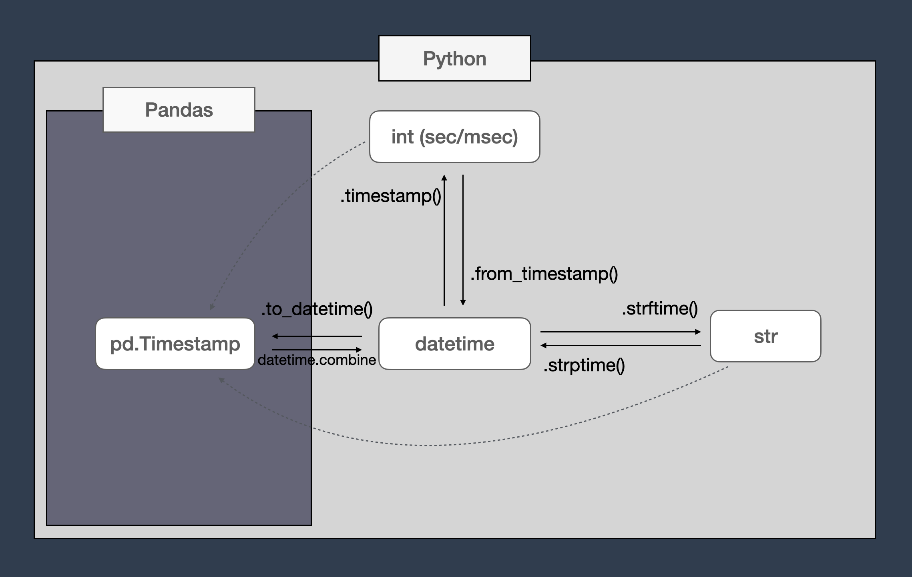

import datetime as dt
import pandas as pd
# create a datetime
dt_event = dt.datetime(year=2024, month=1, day=22, hour=13, minute=55, second=12)
# convert to string with specific format code
FORMAT_CODE = "%m/%d/%Y, %H:%M:%S"
dt_event_str = dt_event.strftime(FORMAT_CODE)
# convert from string to datetime
dt_event = dt.datetime.strptime(dt_event_str, FORMAT_CODE)
# convert from datetime to integer (milliseconds)
msec_event = int(dt_event.timestamp() * 1000)
# convert from milliseconds to integer
dt_event = dt.datetime.fromtimestamp(msec_event / 1000)
# create a list of timestamps
dt_start, dt_end = dt.datetime(2022, 3, 1), dt.datetime(2022, 3, 10)
list_events = []
while dt_start <= dt_end:
list_events.append(dt_start)
dt_start += dt.timedelta(days=1)
# convert list of timestamps to pandas DatetimeIdex of pd.Timestamps
index_events = pd.to_datetime(list_events)
# convert pandas DatetimeIdex of pd.Timestamps to list of timestamps
list_events = [dt.datetime.combine(x.date(), x.time()) for x in index_events]
# convert pandas DatetimeIdex of pd.Timestamps to an Index of integers (nanoseconds)
index_events_int = index_events.astype(int)
# convert pandas Index of integers (nanoseconds) to DatetimeIdex of pd.Timestamps
index_events = pd.to_datetime(index_events_int)
# convert pandas DatetimeIdex of pd.Timestamps to an Index of strings
index_events_str = index_events.astype(str)
# convert pandas Index of strings to DatetimeIdex of pd.Timestamps
index_events = pd.to_datetime(index_events_str)Summary
This blog post collects in one place a range of methods for converting datetime objects across types in python and pandas.
The code snippet and the subsequent diagram summarise the data casting between datetime, int, str, pd.Timestamp.
The remaining sections offer more details and examples about each of those methods. At the end of the post you will find a section about some snippets to manipulate timezones in all the examined formats.

Note
Given a timestamp with no further information about its unit of measurement, you can quickly trial and error its conversion to a human readable format with
pd.Timestamp(<POSIX number here>, unit="us")The most common POSIX formats are:
- float, with six digits after the comma, where
1.000000represents one second after the first of January 1970. - Integer in microsecond, usually denoted with the greek letter \(\mu\), in pandas are converted with
unit="us". - Integer in milliseconds in pandas are converted with
unit="ms".
If none of the unit you try (look under the pd.Timestamp documentation for the complete list), nothing provides satisfactorily results it may be worth trying converting the numbers with pd.Timedelta.
Introduction
When first started working with time series, a recurrent task was for me to google up ways to convert datetimes across python and pandas data types. It took me some times to get to have a grasp about the possibilities and conversion methods, as well as how to set and change timezones without making mistakes.
This blog post is for you to get the same information I got browsing for a while around various stackoverflows and documentation pages, all in one place.
As it is for manipulations of polygons, handling datetimes is another recurring task in geospatial data science.
In python there are multiple ways to encode a point in time according to a range of criteria:
- Readability
- Storing space
- Out of the box methods
Before delving into some examples, let’s warm up with a code snippet showing what can go wrong if dates and times are manipulated carelessly.
import datetime as dt
FORMAT = "%H:%M:%S%z %Y-%m-%d"
event_1 = dt.datetime.strptime("22:15:00+00:00 2022-05-01", FORMAT)
event_2 = dt.datetime.strptime("18:30:00+00:00 2022-06-01", FORMAT)
print(f"Events as type {type(event_1)}")
print(f"Event 1: {event_1}")
print(f"Event 2: {event_2}")
if event_1 < event_2:
print(f"\nDatetime {event_1} comes before {event_2}")
event_1 = event_1.strftime(FORMAT)
event_2 = event_2.strftime(FORMAT)
print(f"\nEvents as type {type(event_1)}")
print(f"Event 1: {event_1}")
print(f"Event 2: {event_2}")
if event_1 > event_2:
print(f"\nDatetime {event_1} comes after {event_2}.")
print("Oh, Really?")Events as type <class 'datetime.datetime'>
Event 1: 2022-05-01 22:15:00+00:00
Event 2: 2022-06-01 18:30:00+00:00
Datetime 2022-05-01 22:15:00+00:00 comes before 2022-06-01 18:30:00+00:00
Events as type <class 'str'>
Event 1: 22:15:00+0000 2022-05-01
Event 2: 18:30:00+0000 2022-06-01
Datetime 22:15:00+0000 2022-05-01 comes after 18:30:00+0000 2022-06-01.
Oh, Really?Can you see what went wrong?
In this example we started from two datetimes (any representation of a date and a time) in string format. These were converted to instances of datetime.datetime from the standard library datetime.
The first odd thing, that becomes evident when calling type(dt.datetime.strptime("22:15:00+00:00 2022-05-01", FORMAT)) is that datetime.datetime is not a class. It is a type, like int and str, so it does not follow the camel case convention1.
Also that the type name and the library name are the same. So, in some modules you will find from datetime import datetime and in other simply import datetime, a confusion that I avoid usually aliasing the library datetime to dt, as done in the previous example.
From the diagram shown, we can see another source of possible confusions: in the python world the term timestamp refers to a datetime object converted to an integer — more details in the section later about how this is done. In the pandas world instead, the term timestamp is used as the class that encodes the pandas datetime object. So there is a change in the naming convention if you are using the python standards libraries, or if you are using pandas.
Starting from the center of the diagram, in each section of this post we will explore a conversion and the specifications of the given types, leaving pandas.Timestamp for last.
datetime.datetime to str and back
There are many formats to represent a datetime into a string. One of the standard is specified in ISO8601.
# create a datetime - you need at least year, month and day.
dt_event = dt.datetime(year=2024, month=1, day=22)
dt_eventdatetime.datetime(2024, 1, 22, 0, 0)# create a datetime with hour, minutes and seconds
dt_event = dt.datetime(year=2024, month=1, day=22, hour=13, minute=55, second=12)
dt_eventdatetime.datetime(2024, 1, 22, 13, 55, 12)# convert to string with a range of formats
print(dt_event.strftime("%m/%d/%Y, %H:%M:%S"))
print(dt_event.strftime("%Y-%m-%d, %H:%M"))
print(dt_event.strftime("%H:%M"))01/22/2024, 13:55:12
2024-01-22, 13:55
13:55Once we have the string we can move back to the timestamp object, passing the same format code (this operation is not bijective if some of the information is not included in the chosen format code).
More info about the format codes and what each letter means is available at the official documentation https://docs.python.org/3/library/datetime.html#strftime-and-strptime-behavior.
# Create a datetime object
dt_event = dt.datetime(year=2024, month=1, day=22, hour=13, minute=55, second=12, microsecond=120)
print(f"Datetime: {dt_event}")
# convert to string
FORMAT_CODE = "%m/%d/%Y, %H:%M:%S"
str_event = dt_event.strftime(FORMAT_CODE)
print(f"String: {dt_event}")
# string to datetime
print(f"Datetime: {dt.datetime.strptime(str_event, FORMAT_CODE)}")Datetime: 2024-01-22 13:55:12.000120
String: 2024-01-22 13:55:12.000120
Datetime: 2024-01-22 13:55:12In addition to timestamp.timestamp you can create only the time, the date and a timedelta.
print(dt.time(hour=4))
print(dt.date(year=2024, month=3, day=11))
print(dt.timedelta(hours=3))
# we can not sum a timedelta to a time
try:
print(dt.time(hour=4) + dt.time(hour=4))
except TypeError as err:
print(f"Error raised: TypeError {err}")
# nor to a date
try:
print(dt.date(year=2024, month=3, day=11) + dt.time(hour=4))
except TypeError as err:
print(f"Error raised: TypeError {err}")
# but we can sum it to a timestamp
print(dt.datetime(year=2024, month=3, day=11, hour=3) + dt.timedelta(hours=4))04:00:00
2024-03-11
3:00:00
Error raised: TypeError unsupported operand type(s) for +: 'datetime.time' and 'datetime.time'
Error raised: TypeError unsupported operand type(s) for +: 'datetime.date' and 'datetime.time'
2024-03-11 07:00:00# if we quickly want to have the timestamp converted to a string in isoformat we can use:
dt_event.isoformat()'2024-01-22T13:55:12.000120'datetime.datetime to int and back
The integer representation of a datetime is called timestamp in the python world. We note again that it is not the same as the the pandas Timestamp object.
A timestamp is a numerical representation of a date in the Unix epoch (or Unix time or POSIX time or Unix timestamp). It is the number of seconds that have elapsed since January 1, 1970 (midnight UTC/GMT), not counting leap seconds (using the ISO 8601 convention it is 1970-01-01T00:00:00Z).
dt_event = dt.datetime(year=2024, month=3, day=11, hour=3)
dt_event.timestamp?Docstring: Return POSIX timestamp as float.
Type: builtin_function_or_methodOut of the box, the python timestamp is in seconds, and encoded as a float. In some dataset, and to save memory, it can be encoded in milliseconds or even in microseconds, and encoded as an integer.
print(f"Datetime: {dt_event}")
print(f"Python timestamp: {dt_event.timestamp()}")Datetime: 2024-03-11 03:00:00
Python timestamp: 1710126000.0ISO_FORMAT_CODE = "%Y-%m-%dT%H:%M:%S%z"
dt_event_zero = dt.datetime.strptime("1970-01-01T00:00:00Z", ISO_FORMAT_CODE)
print(f"Datetime: {dt_event_zero}")
print(f"Python timestamp: {dt_event_zero.timestamp()}")Datetime: 1970-01-01 00:00:00+00:00
Python timestamp: 0.0dt_event = dt.datetime(year=2024, month=3, day=11, hour=3, minute=13, second=45)
sec_event = int(dt_event.timestamp())
msec_event = int(dt_event.timestamp() * 1000) # convert to milliseconds before casting
back_to_dt_event = dt.datetime.fromtimestamp(msec_event / 1000)
print(f"Datetime: {dt_event}")
print(f"Python timestamp (s): {sec_event}")
print(f"Python timestamp (ms): {msec_event}")
print(f"Back to datetime: {back_to_dt_event}")Datetime: 2024-03-11 03:13:45
Python timestamp (s): 1710126825
Python timestamp (ms): 1710126825000
Back to datetime: 2024-03-11 03:13:45datetime.datetime, str and int to pandas.Timestamp and back
In pandas we typically don’t deal with a single datetime, but with a list of those. With timeseries, pandas becomes particularly efficient when timeseries are used as data frames indexes.
Here we see some examples of conversion of lists of datetime.datetime into pandas pd.Timestamp indexes, and into int and string.
def print_events(iterable_events):
"""helper to print info about iterable events len and types"""
print(f"{len(iterable_events)} days: ")
print("[")
for ev in iterable_events:
print(f" {ev}")
print("]")
print(f"This is a {type(iterable_events)} of {type(iterable_events[0])} elements.")# Create a list of datetime.datetime
dt_start = dt.datetime(2022, 3, 1)
dt_end = dt.datetime(2022, 3, 10)
list_events = []
while dt_start <= dt_end:
list_events.append(dt_start)
dt_start += dt.timedelta(days=1)
print_events(list_events)10 days:
[
2022-03-01 00:00:00
2022-03-02 00:00:00
2022-03-03 00:00:00
2022-03-04 00:00:00
2022-03-05 00:00:00
2022-03-06 00:00:00
2022-03-07 00:00:00
2022-03-08 00:00:00
2022-03-09 00:00:00
2022-03-10 00:00:00
]
This is a <class 'list'> of <class 'datetime.datetime'> elements.# Create the same list as above, with pandas.date_range https://pandas.pydata.org/docs/reference/api/pandas.date_range.html
import numpy as np
import pandas as pd
dt_start = dt.datetime(2022, 3, 1)
dt_end = dt.datetime(2022, 3, 10)
index_events = pd.date_range(start=dt_start, end=dt_end)
print_events(index_events)10 days:
[
2022-03-01 00:00:00
2022-03-02 00:00:00
2022-03-03 00:00:00
2022-03-04 00:00:00
2022-03-05 00:00:00
2022-03-06 00:00:00
2022-03-07 00:00:00
2022-03-08 00:00:00
2022-03-09 00:00:00
2022-03-10 00:00:00
]
This is a <class 'pandas.core.indexes.datetimes.DatetimeIndex'> of <class 'pandas._libs.tslibs.timestamps.Timestamp'> elements.# Assign the index to a dataframe
df = pd.DataFrame(np.random.choice(list("random"), size=len(index_events))).set_index(index_events)
df| 0 | |
|---|---|
| 2022-03-01 | m |
| 2022-03-02 | r |
| 2022-03-03 | n |
| 2022-03-04 | o |
| 2022-03-05 | r |
| 2022-03-06 | d |
| 2022-03-07 | m |
| 2022-03-08 | n |
| 2022-03-09 | a |
| 2022-03-10 | d |
# Same pandas index_events created above can be created directly with strings
index_events = pd.date_range(start='3/1/2022', end='3/10/2022')
print_events(index_events)10 days:
[
2022-03-01 00:00:00
2022-03-02 00:00:00
2022-03-03 00:00:00
2022-03-04 00:00:00
2022-03-05 00:00:00
2022-03-06 00:00:00
2022-03-07 00:00:00
2022-03-08 00:00:00
2022-03-09 00:00:00
2022-03-10 00:00:00
]
This is a <class 'pandas.core.indexes.datetimes.DatetimeIndex'> of <class 'pandas._libs.tslibs.timestamps.Timestamp'> elements.# Convert the list of datetimes to the pandas index
index_events_converted = pd.to_datetime(list_events)
print_events(index_events)
if not pd.testing.assert_index_equal(index_events_converted, index_events):
print()
print("The two index events are not considered equal! Why?")10 days:
[
2022-03-01 00:00:00
2022-03-02 00:00:00
2022-03-03 00:00:00
2022-03-04 00:00:00
2022-03-05 00:00:00
2022-03-06 00:00:00
2022-03-07 00:00:00
2022-03-08 00:00:00
2022-03-09 00:00:00
2022-03-10 00:00:00
]
This is a <class 'pandas.core.indexes.datetimes.DatetimeIndex'> of <class 'pandas._libs.tslibs.timestamps.Timestamp'> elements.
The two index events are not considered equal! Why?Here something interesting have happened. Even if the two series have the same values, they are not equal.
Printing them individually will show why:
index_eventsDatetimeIndex(['2022-03-01', '2022-03-02', '2022-03-03', '2022-03-04',
'2022-03-05', '2022-03-06', '2022-03-07', '2022-03-08',
'2022-03-09', '2022-03-10'],
dtype='datetime64[ns]', freq='D')index_events_convertedDatetimeIndex(['2022-03-01', '2022-03-02', '2022-03-03', '2022-03-04',
'2022-03-05', '2022-03-06', '2022-03-07', '2022-03-08',
'2022-03-09', '2022-03-10'],
dtype='datetime64[ns]', freq=None)The freq= value of the converted frequency is different from the frequency of the original one, that is defined by days. Under the hood they are different objects, as the first one contains first and last element and the frequency, and the second contains every single individual element.
Even assigning the frequency to index_events_converted afterwards does not make the two DateteimeIndex equal:
index_events_converted.freq = "D"
index_events_convertedDatetimeIndex(['2022-03-01', '2022-03-02', '2022-03-03', '2022-03-04',
'2022-03-05', '2022-03-06', '2022-03-07', '2022-03-08',
'2022-03-09', '2022-03-10'],
dtype='datetime64[ns]', freq='D')if not pd.testing.assert_index_equal(index_events_converted, index_events):
print()
print("The two index events are still not equal!")
The two index events are still not equal!When working with pd.Timestamp we have to keep in mind that different constructors creating the same numerical results produce different objects.
What about the memory? Also this is the same for both objects:
print(index_events.memory_usage())
print(index_events_converted.memory_usage())80
80Now we can convert back from a pandas DatetimeIndex to a list of datetime.datetime objects.
A pd.Timestamp object can not be converted directly into a datetime.datetime object, but it can be converted into a datetime.date and a datetime.time object.
So we can use a list comprehension and combine the two exported formats:
# Create a Pandas Timestamp object
pd_event = pd.Timestamp('2022-06-18 12:34:56')
# Convert the Timestamp to a Python datetime.date object
date = pd_event.date()
time = pd_event.time()
dt_event = dt.datetime.combine(date, time)
print(f"Event {pd_event} of type {type(pd_event)}")
print(f"Event {dt_event} of type {type(dt_event)}")Event 2022-06-18 12:34:56 of type <class 'pandas._libs.tslibs.timestamps.Timestamp'>
Event 2022-06-18 12:34:56 of type <class 'datetime.datetime'>index_event_converted_back = [dt.datetime.combine(x.date(), x.time()) for x in index_events_converted]
print_events(index_event_converted_back)10 days:
[
2022-03-01 00:00:00
2022-03-02 00:00:00
2022-03-03 00:00:00
2022-03-04 00:00:00
2022-03-05 00:00:00
2022-03-06 00:00:00
2022-03-07 00:00:00
2022-03-08 00:00:00
2022-03-09 00:00:00
2022-03-10 00:00:00
]
This is a <class 'list'> of <class 'datetime.datetime'> elements.Pandas Timestamp to int
To convert a pandas DatetimeIndex from pd.Timestamp to integer, we have to use the .astype method of a pandas series.
print(index_events)
index_events_int = index_events.astype(int)
print()
print(index_events_int)DatetimeIndex(['2022-03-01', '2022-03-02', '2022-03-03', '2022-03-04',
'2022-03-05', '2022-03-06', '2022-03-07', '2022-03-08',
'2022-03-09', '2022-03-10'],
dtype='datetime64[ns]', freq='D')
Index([1646092800000000000, 1646179200000000000, 1646265600000000000,
1646352000000000000, 1646438400000000000, 1646524800000000000,
1646611200000000000, 1646697600000000000, 1646784000000000000,
1646870400000000000],
dtype='int64')The timestamps are now in nanoseconds, as specified in the dtype of the DatetimeIndex index_events. You have to divide it by 1e9 to have them in seconds:
index_events_int_sec = (index_events_int / 1e9).astype(int)
index_events_int_secIndex([1646092800, 1646179200, 1646265600, 1646352000, 1646438400, 1646524800,
1646611200, 1646697600, 1646784000, 1646870400],
dtype='int64')# convert back to `DatetimeIndex`
pd.to_datetime(index_events_int)DatetimeIndex(['2022-03-01', '2022-03-02', '2022-03-03', '2022-03-04',
'2022-03-05', '2022-03-06', '2022-03-07', '2022-03-08',
'2022-03-09', '2022-03-10'],
dtype='datetime64[ns]', freq=None)# convert back to `DatetimeIndex`. Pandas expects nanoseconds
pd.to_datetime(index_events_int_sec)DatetimeIndex(['1970-01-01 00:00:01.646092800',
'1970-01-01 00:00:01.646179200',
'1970-01-01 00:00:01.646265600',
'1970-01-01 00:00:01.646352',
'1970-01-01 00:00:01.646438400',
'1970-01-01 00:00:01.646524800',
'1970-01-01 00:00:01.646611200',
'1970-01-01 00:00:01.646697600',
'1970-01-01 00:00:01.646784',
'1970-01-01 00:00:01.646870400'],
dtype='datetime64[ns]', freq=None)Pandas Timestamp to str
Conversion to strings works in the same way as with int.
# convert from DatetimeIndex to string.
print(index_events)
index_events_str = index_events.astype(str)
print()
print(index_events_str)DatetimeIndex(['2022-03-01', '2022-03-02', '2022-03-03', '2022-03-04',
'2022-03-05', '2022-03-06', '2022-03-07', '2022-03-08',
'2022-03-09', '2022-03-10'],
dtype='datetime64[ns]', freq='D')
Index(['2022-03-01', '2022-03-02', '2022-03-03', '2022-03-04', '2022-03-05',
'2022-03-06', '2022-03-07', '2022-03-08', '2022-03-09', '2022-03-10'],
dtype='object')# convert back from string to DatetimeIndex
pd.to_datetime(index_events_str)DatetimeIndex(['2022-03-01', '2022-03-02', '2022-03-03', '2022-03-04',
'2022-03-05', '2022-03-06', '2022-03-07', '2022-03-08',
'2022-03-09', '2022-03-10'],
dtype='datetime64[ns]', freq=None)Timezones
Some basic concepts first:
- UTC universal time coordinates: is the standard to assign to each country in the world a timezone, that is an offset in respect to the timezone zero, also called Zulu or GTM.
- GMT Greenwich Mean Time: is the time zone at the meridian zero, passing at Greenwich in England. The UTC standard tells you how many time zone you are away from Greenwich.
- Zulu for the NATO alphabet letter
Z, was originally indicating the letter z as in “zero meridian”. This is an equivalent of GTM and it is commonly used in the army and in the civilian aviation. The final “zulu” in a radio message refers to the fact that the time is not read in local time. For example02:00amat GMT, would read “zero two hundred zulu” in a radio communication.
The names of the timezones are typically the UTC offsets, written as suffix to the timestamps, such as +02:00 or -05:00, though some particularly recurring timezones have their names, such as:
- Eastern Standard Time (EST): UTC-0500 or 5 hours behind GMT.
- Central Standard Time (CST): UTC-0600 or 6 hours behind GMT.
- Mountain Standard Time (MST): UTC-0700 or 7 hours behind GMT.
- Pacific Standard Time (PST): UTC-0800 or 8 hours behind GMT.
Timezones in timestamps
When timezones are written as offsets and appended to the timestamps, the are also summed or subtracted to the datetime itself.
For example to write 2023-02-21T06:07:21+03:30 in GMT, we have to set the offset to zero and subtract the offset: 2023-02-21T02:37:21+00:00, that in the ISO 8601 becomes 2023-02-21T02:37:21Z, with in the Zulu timezone, and in a convention that is often found in public datasets as 2023-02-21 02:37:21 UTC, conflating the concepts of GMT and UTC.
Another way of encoding the timezones is with the name of a representative city where the timezone belongs to. +03:30 does not tell much about where we are, if compared to "Asia/Tehran".
No timezone given
When a timezone is not specified, the timestamp is said to be naive, or not timezone-aware.
In this case it is important to check with the data provider if the datetime are given in local time or at GMT. If the datetime are given as integer UNIX timestamps, then they are at GMT, unless there was a mistake in the data ingestion.
import datetime as dt
from dateutil import tz
# naive
str_event = "2023-02-21 02:37:21"
dt_event = dt.datetime.strptime(str_event, "%Y-%m-%d %H:%M:%S")
print(f"naive datetime: {dt_event.isoformat()}")
# GTM
str_event = "2023-02-21 02:37:21 GMT" # works also with UTC instead of GMT
dt_event = dt.datetime.strptime(str_event, "%Y-%m-%d %H:%M:%S %Z")
print(f"GTM datetime: {dt_event.isoformat()}")
# zero offset
str_event = "2023-02-21 02:37:21+00:00"
dt_event = dt.datetime.strptime(str_event, "%Y-%m-%d %H:%M:%S%z")
print(f"datetime +00:00: {dt_event.isoformat()}")
# +1h offset
str_event = "2023-02-21 03:37:21+01:00"
dt_event = dt.datetime.strptime(str_event, "%Y-%m-%d %H:%M:%S%z")
print(f"datetime +01:00: {dt_event.isoformat()}")naive datetime: 2023-02-21T02:37:21
GTM datetime: 2023-02-21T02:37:21
datetime +00:00: 2023-02-21T02:37:21+00:00
datetime +01:00: 2023-02-21T03:37:21+01:00The code above should be enough to convince you that when the offset is not specified, then we can assume the datetime is at GMT, as it was at GMT when we passed as a string.
Timezones as capital cities
Below, with dateutil we can also pass the offset with the capital city based offset, such as “Asia/Tehran”.
# country/city offset
str_event = "2023-02-21 03:37:21"
str_offset = "Asia/Tehran"
dt_event = dt.datetime.strptime(str_event, "%Y-%m-%d %H:%M:%S")
print(f"datetime: {dt_event.isoformat()}")
dt_event = dt_event.astimezone(tz.gettz(str_offset))
print(f"datetime: {dt_event.isoformat()}")datetime: 2023-02-21T03:37:21
datetime: 2023-02-21T07:07:21+03:30If you use this solution be aware that there is no validation, and if the string is misspelled or non existing, the datetime will be assigned the default +00:00 offset.
dt_event = dt.datetime.strptime(str_event, "%Y-%m-%d %H:%M:%S")
print(f"datetime: {dt_event.isoformat()}")
correct = "Asia/Tehran"
dt_event = dt_event.astimezone(tz.gettz(correct))
print(f"datetime in {correct}: {dt_event.isoformat()}")
misspelled = "Asia/Theran"
dt_event = dt_event.astimezone(tz.gettz(misspelled))
print(f"datetime in {misspelled}: {dt_event.isoformat()}")
plain_wrong = "MiddleEarth/County"
dt_event = dt_event.astimezone(tz.gettz(plain_wrong))
print(f"datetime in {plain_wrong}: {dt_event.isoformat()}")datetime: 2023-02-21T03:37:21
datetime in Asia/Tehran: 2023-02-21T07:07:21+03:30
datetime in Asia/Theran: 2023-02-21T03:37:21+00:00
datetime in MiddleEarth/County: 2023-02-21T03:37:21+00:00Not raising an error for non existing capitals is not ideal. So rather than assigning the timezone dateutil I would recommend the method timezone from pytz.
from pytz import timezone
dt_event = dt.datetime.strptime(str_event, "%Y-%m-%d %H:%M:%S")
correct = "Asia/Tehran"
dt_event = dt_event.astimezone(tz.gettz(correct))
print(f"datetime in {correct}: {dt_event.isoformat()}")
plain_wrong = "MiddleEarth/County"
try:
dt_event.astimezone(timezone(plain_wrong))
print(f"datetime in {plain_wrong}: {dt_event.isoformat()}")
except Exception as err:
print(f"Error raised: {type(err)} {err}")datetime in Asia/Tehran: 2023-02-21T07:07:21+03:30
Error raised: <class 'pytz.exceptions.UnknownTimeZoneError'> 'MiddleEarth/County'Timezones in pandas
Also to the pd.Timestamp object can be assigned a timezone with tz_localize and can be converted from one timezone to another with tz_convert (this last works only with the non-naive timestamps).
index_events = pd.date_range(start='3/1/2022', end='3/10/2022')try:
index_events.tz_convert('US/Pacific')
except TypeError as err:
print(f"We can not use tz_convert directly. Error raised: {err}")We can not use tz_convert directly. Error raised: Cannot convert tz-naive timestamps, use tz_localize to localizeindex_events_localised = index_events.tz_localize('US/Pacific')
print_events(index_events_localised) # note that the datetimes are not shifted! They are considered in local time at the specified location10 days:
[
2022-03-01 00:00:00-08:00
2022-03-02 00:00:00-08:00
2022-03-03 00:00:00-08:00
2022-03-04 00:00:00-08:00
2022-03-05 00:00:00-08:00
2022-03-06 00:00:00-08:00
2022-03-07 00:00:00-08:00
2022-03-08 00:00:00-08:00
2022-03-09 00:00:00-08:00
2022-03-10 00:00:00-08:00
]
This is a <class 'pandas.core.indexes.datetimes.DatetimeIndex'> of <class 'pandas._libs.tslibs.timestamps.Timestamp'> elements.print_events(index_events_localised.tz_convert('GMT'))10 days:
[
2022-03-01 08:00:00+00:00
2022-03-02 08:00:00+00:00
2022-03-03 08:00:00+00:00
2022-03-04 08:00:00+00:00
2022-03-05 08:00:00+00:00
2022-03-06 08:00:00+00:00
2022-03-07 08:00:00+00:00
2022-03-08 08:00:00+00:00
2022-03-09 08:00:00+00:00
2022-03-10 08:00:00+00:00
]
This is a <class 'pandas.core.indexes.datetimes.DatetimeIndex'> of <class 'pandas._libs.tslibs.timestamps.Timestamp'> elements.For a given dataset of datetime in GMT, we have first to localise them over Greenwich, and then convert to the local timezone.
index_events = pd.date_range(start='3/1/2022', end='3/10/2022').tz_localize("GMT")
print_events(index_events.tz_convert('US/Pacific'))10 days:
[
2022-02-28 16:00:00-08:00
2022-03-01 16:00:00-08:00
2022-03-02 16:00:00-08:00
2022-03-03 16:00:00-08:00
2022-03-04 16:00:00-08:00
2022-03-05 16:00:00-08:00
2022-03-06 16:00:00-08:00
2022-03-07 16:00:00-08:00
2022-03-08 16:00:00-08:00
2022-03-09 16:00:00-08:00
]
This is a <class 'pandas.core.indexes.datetimes.DatetimeIndex'> of <class 'pandas._libs.tslibs.timestamps.Timestamp'> elements.Footnotes
In Python >3 the concepts of class and type was unified, and pure
typeobjects are now only the native ones.↩︎